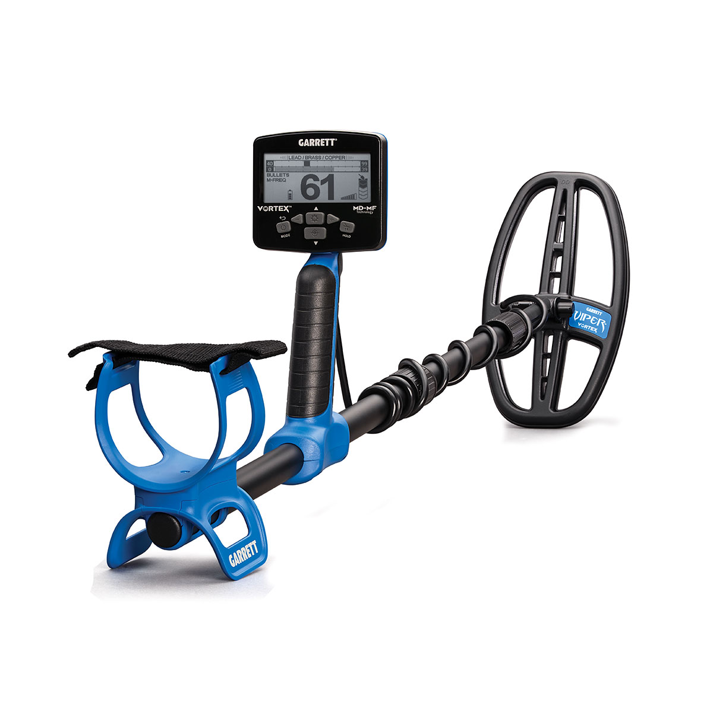
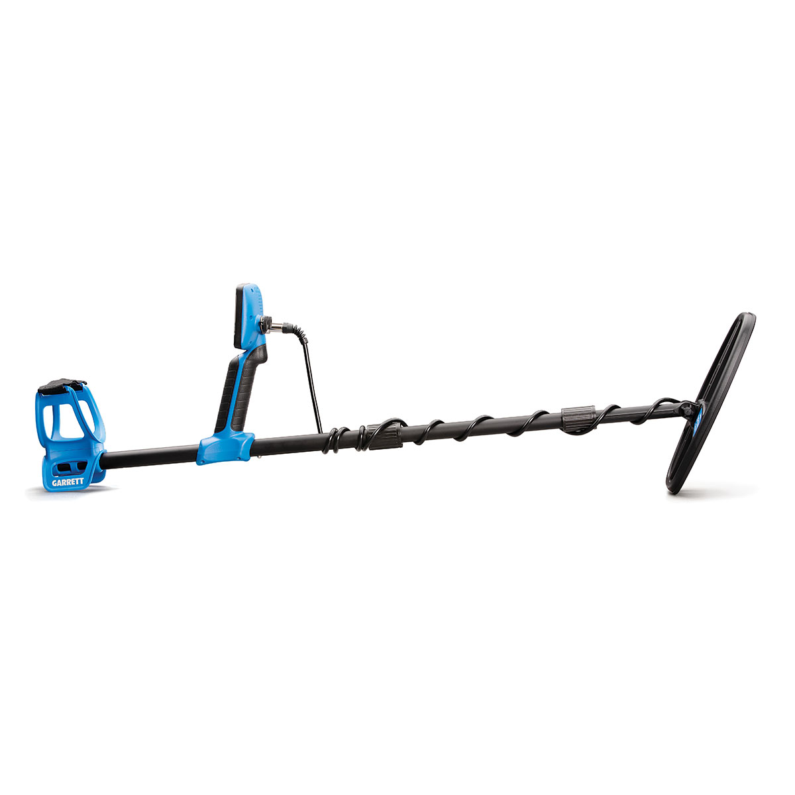
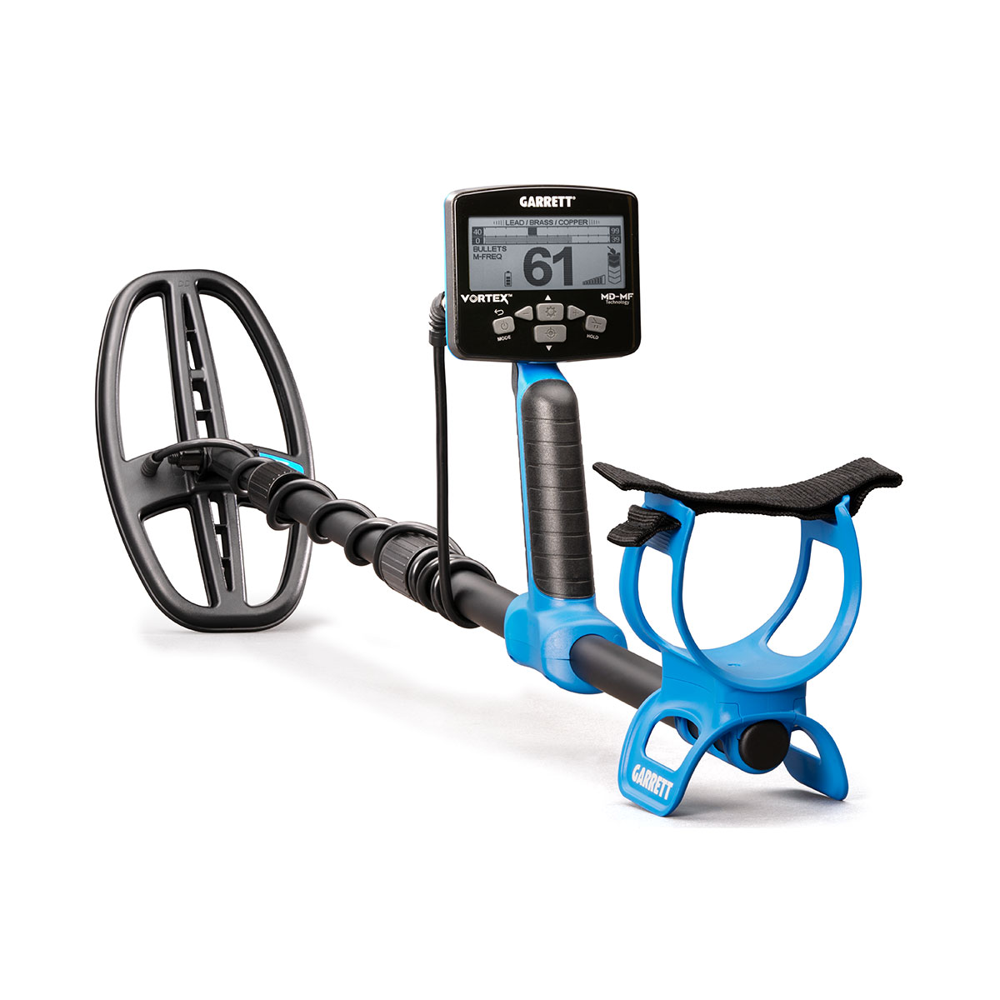
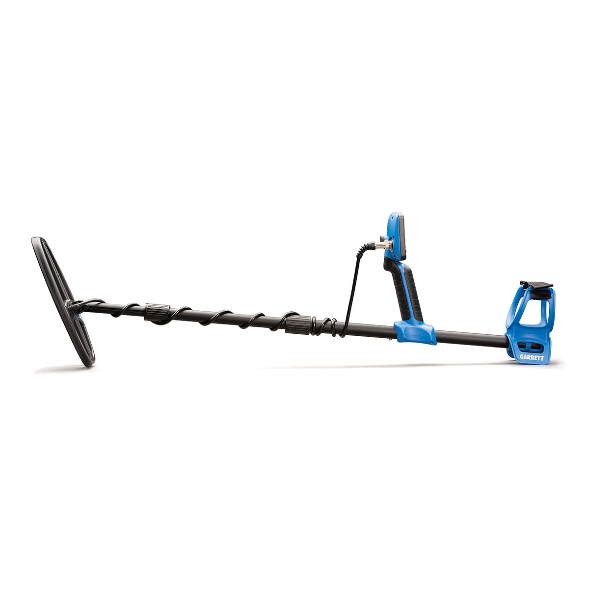
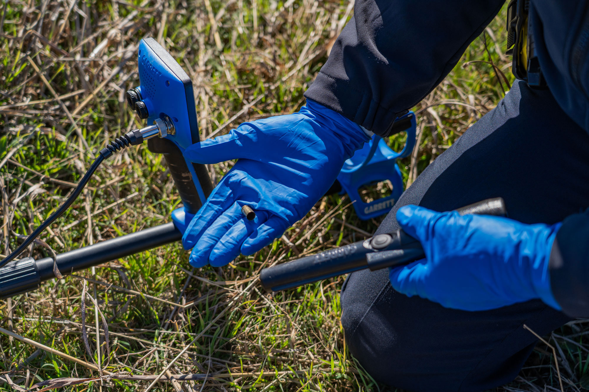
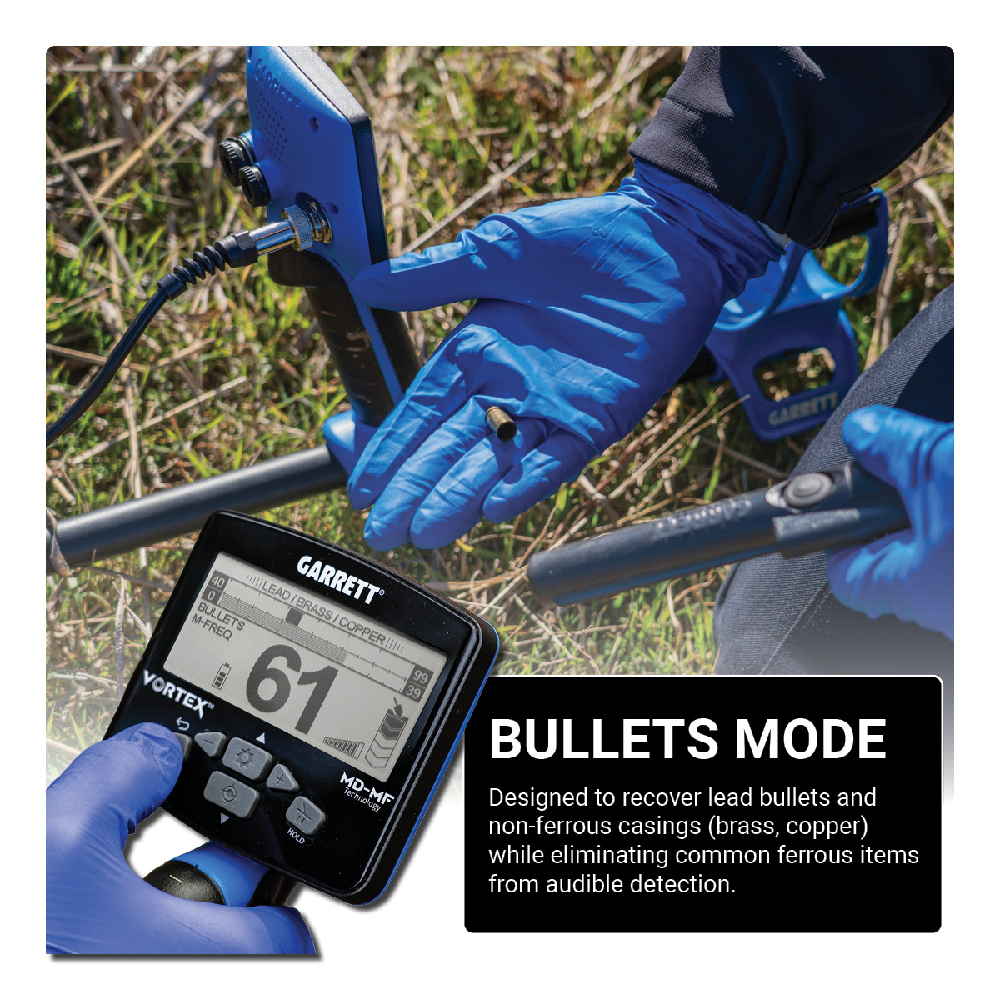

Ampliar







Temporariamente Indisponível
Multi-Flex™
Investigação Criminal
Garrett
Vortex CSI
Detector multifrequência de última geração desenvolvido para profissionais de investigação criminal — recuperação sistemática de estojos, projéteis, armas e evidências balísticas em qualquer cena de crime.
Tecnologia: Multi-Flex™ — multifrequência simultânea
Submersão: Total até 3 metros (detector + bobina)
Wireless: Z-Lynk integrado (fone sem fio MS-3)
Firmware: Atualizável via software
Display: LCD com retroiluminação e Target ID
Produto Temporariamente Indisponível
Cadastre-se para ser notificado quando o produto estiver disponível